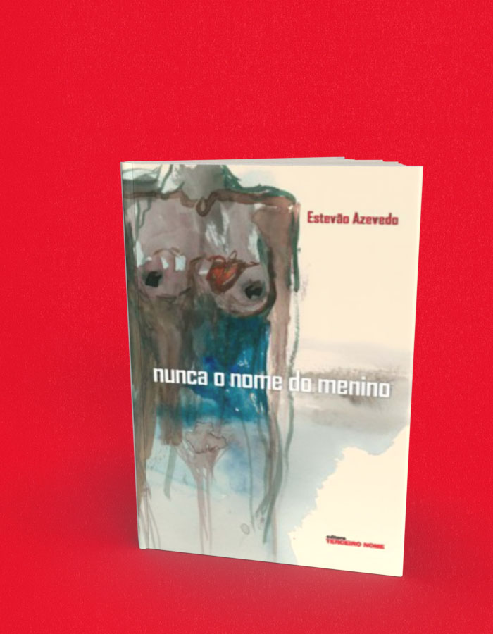

Nunca o nome do menino
A compra acontece no site da livraria, em uma nova aba. Consulte lá os preços e a disponibilidade. Procure pelo título ou ISBN deste livro.
- Autoria / créditos
- Estevão Azevedo
- Páginas
- 184
- Formato
- 14 x 21 cm
- Acabamento
- brochura
Sobre o livro
ESTEVÃO AZEVEDO RECEBEU, EM 2015, O PRÊMIO SÃO PAULO DE LITERATURA DE MELHOR LIVRO DO ANO POR SEU ROMANCE "Tempo de espalhar pedras", publicado pela Cosc e Naify.
"NUNCA O NOME DO MENINO", publicado pela Terceiro Nome, FOI FINALISTA DO PRÊMIO SÃO PAULO DE LITERATURA 2009 NA CATEGORIA MELHOR LIVRO DO ANO DE AUTOR ESTREANTE
Em Nunca o nome do menino, a personagem principal, uma mulher, nos relata os dias de sua vida que se seguiram ao momento em que ela descobre que é personagem de uma ficção que não aprecia e cujo autor despreza. Em seu labirinto literário, dois tempos distantes de sua vida nos são narrados, duas linhas que se estendem da primeira à última página como serpentes ávidas por devorar o próprio rabo e criar uma narrativa de vertigem, repleta de espelhamentos, ciclos e sentimentos. Ela nos conta os fatos de sua vida passada – sua infância, o amor de um menino, o convívio com o próprio corpo em transformação, a relação com os pais – que a conduziriam a tal descoberta. O que fazer diante de tão angustiante possibilidade? À personagem deste livro resta amputar o dedo mínimo da mão esquerda, imaginando com isso arrancar pelo menos algumas letras das palavras que a descrevem. Ao leitor, cabe percorrer as páginas de lirismo e delicadeza do primeiro romance de Estevão Azevedo e aceitar o desafio de pensar que sua própria vida pode também ser uma ficção.
Estevão Azevedo nasceu em 1978, em Natal, Rio Grande do Norte. É formado em Jornalismo e em Letras. Em 2005, publicou o volume de contos O som de nada acontecendo, pelo selo independente Edições K. Em 2014 labçou o romance Tempo de espalhar pedras, finalista do Prêmio São Paulo de Literatura
← Voltar ao catálogo